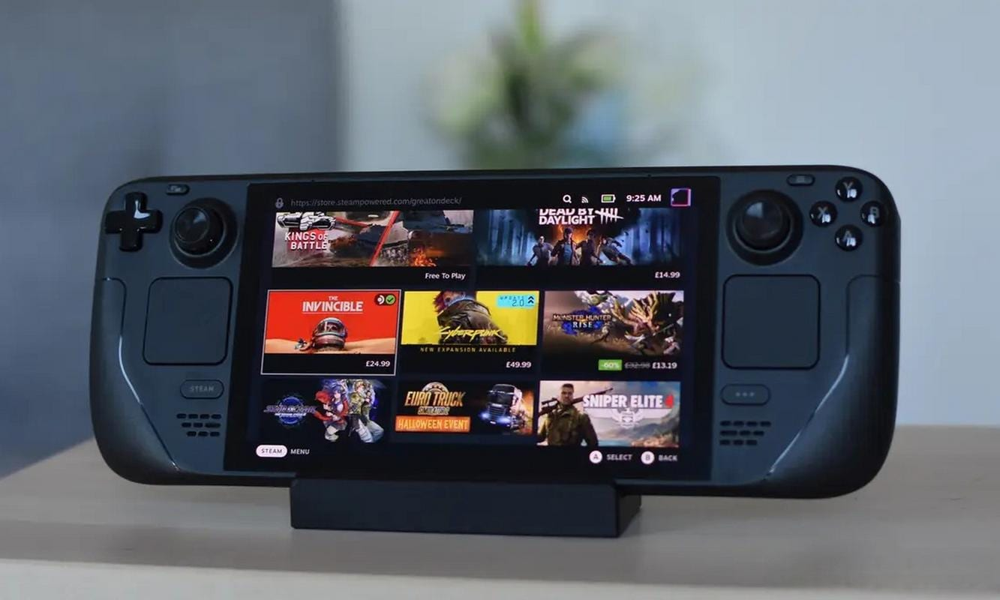

Valve Steam Deck

把整个 Steam 库装进口袋的开源 PC 掌机标杆。
客观评测
Steam Deck 搭载 AMD 定制 APU：Zen 2 四核 CPU 配 RDNA 2 八 CU GPU，16GB LPDDR5 内存，性能接近入门游戏本。7 英寸 1280×800 触控屏观感良好，《战神》中画质稳定 40-50fps。SteamOS 基于 Arch Linux，Proton 兼容层让大部分 Windows 游戏直接运行。实测 eMMC 版读写较慢，建议选 NVMe 版。
主观点评
第一次在地铁上打《艾尔登法环》时，掌机玩家多年的幻想终于成真。握把饱满，背键与触控板让复杂键位映射变得轻松，陀螺仪瞄准在射击游戏里意外精准。系统开源自由度极高，刷机折腾本身就乐趣十足。它证明了 PC 游戏可以随身携带，是掌机史上的分水岭产品，也重新点燃了整个 PC 掌机品类。
优点与不足
- Steam 库无缝同步，掌上玩 3A 不再是梦
- SteamOS 加 Proton 兼容层体验流畅可开源定制
- 触控板加陀螺仪加背键操控方案极为完善
- 669g 重量偏沉，长时间握持手腕疲劳
- 续航玩 3A 仅 2-3 小时，风扇噪音明显
参数规格
| 屏幕 | 7 英寸 IPS，1280×800，60Hz，触控 |
|---|---|
| 处理器 | AMD Zen 2 定制 APU，4 核 8 线程，2.4-3.5GHz |
| 图形 | RDNA 2 架构，8 计算单元，1.0-1.6GHz |
| 内存 | 16GB LPDDR5，5500MT/s 四通道 |
| 存储 | 64GB eMMC / 256GB / 512GB NVMe SSD，支持 microSD 扩展 |
| 操控 | 双摇杆 + 背键×4 + 陀螺仪 + 触控板×2 |
| 系统 | SteamOS 3.0（Arch Linux），可安装 Windows |
| 网络 | Wi-Fi 5、蓝牙 5.0、USB-C 支持 DisplayPort 输出 |
| 续航 | 40Wh 电池，实测 2-8 小时 |
| 尺寸重量 | 298×117×49mm，约 669g |